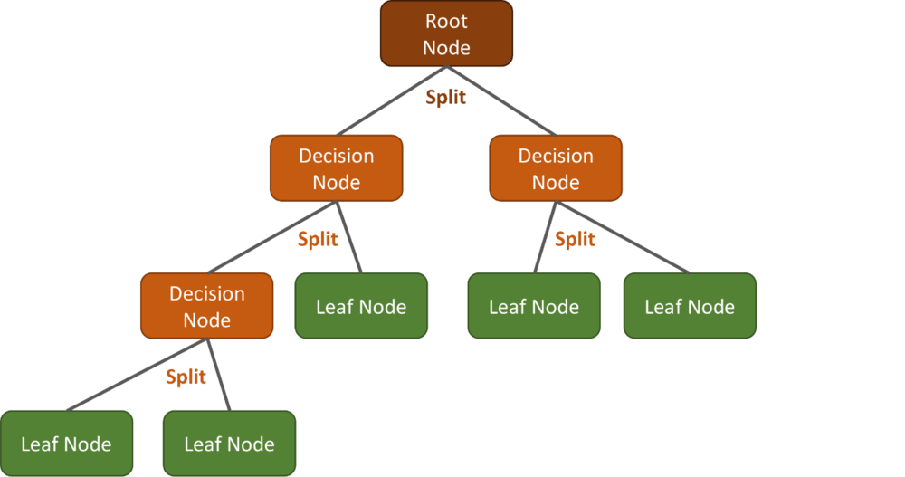
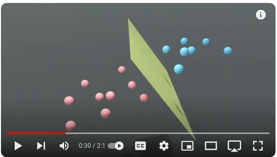
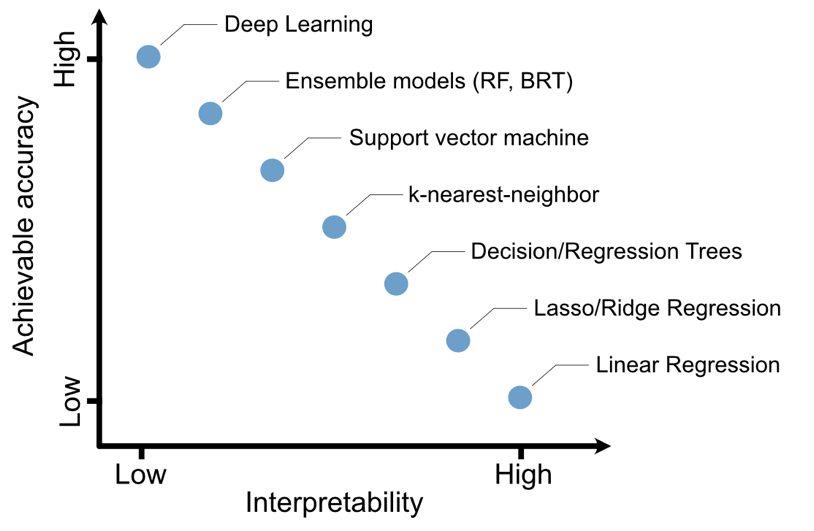
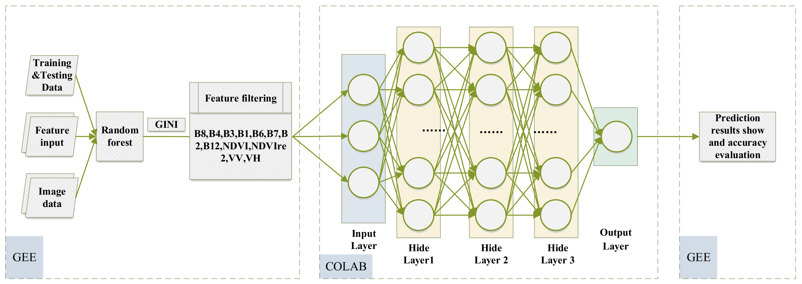
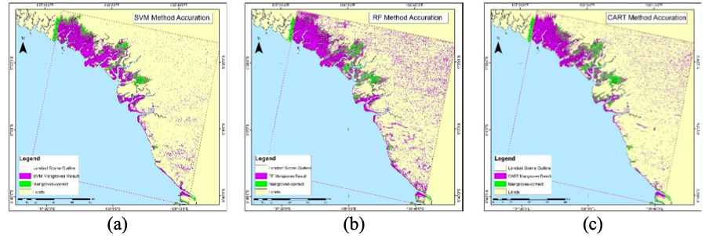

6 Classification (i)
6.1 Summary
This week we were introduced to the principles and methods of classification in the context of remote sensing, focusing specifically on the role of machine learning (hereafter ML). Several ML methods were outlined including classification and regression trees (CART), random forests, maximum likelihood and support vector machine (SVM), and we also discussed image classification approaches (supervised vs unsupervised learning). Below I shall summarise the lecture content and offer a brief description of each classification method covered. Since this is newer content to me than some of what was covered in previous weeks, this summary section will be longer and more in depth as I had to spend more time learning what each method was about!
6.1.1 What does ‘classification’ refer to?
In the context of remote sensing, classification is the process of categorising all pixels in an image into classes or themes based on their spectral signatures. Often, this is used to label different land cover types/change, described by Talukdar et al.,2020 as being an ‘increasingly essential aspect of activities and applications, such as in planning for land use or global warming mitigation’. Gómez-Chova et al.,2015 consolidate this, arguing that ‘among all the products that can be obtained from the acquired images, classification maps are perhaps the most relevant ones’, as ‘land-cover and land-use maps are mandatory in multitemporal studies and constitute useful inputs to processes such as the modeling of climate change, the study of oceanic currents, arctic studies, or postcatastrophe deployments.’
6.1.2 What are the different approaches to classifying surface types?
- Expert systems
Designed to mirror human expertise/decision making in classification of EO data
Takes in human knowledge to emulate problem solving that usually requires human intelligence
- Machine learning (ML)
By contrast, ML is a set of techniques that allow computers to classify images without explicit programming
It uses algorithms that learn from data and improves over time (becomes more accurate) as it is exposed to more examples
It can then be used on new input data
6.1.3 CART: Classification and regression trees
CART is a generic term for two types of decision trees; classification and regression trees. In short however, these both represent versatile supervised ML methods.
Classification trees
- Used to classify data into discrete categories (ie. whether a day is cloudy or not)
Regression trees
- Used to predict a continuous dependent variable (ie. house prices)
They are decision trees where each fork is split into a predictor variable and each node has a prediction for the target variable at the end. Nodes are split into sub-nodes based on a threshold value of an attribute. The root node is taken as the training set and is split into two by considering the best attribute and threshold value. Further, the subsets are also split using the same logic. This continues till the last pure sub-set is found in the tree or the maximum number of leaves possible in that growing tree.

CART algorithms use Gini impurity to decide where to split the data. The algorithm iteratively divides the dataset into smaller subsets, choosing splits that decrease Gini impurity, aiming for homogenous nodes. This process continues until a stopping criterion is met, creating a tree where each leaf represents a predicted class or value, effectively using Gini impurity as a guide to build a model that can classify new instances. Unlike linear regression, where you seek a single coefficient used to estimate the slope of a relationship, CART provides a series of mean values for subsets of the dataset, making it suitable when dealing with non-linear datasets.
Overfitting is a potential problem in the use of CART, which occurs when the tree model becomes too complex - meaning it closely mirrors the training data, including its noise and outliers. The effect of this is a poor generalisation on unseen data, with the model instead capturing noise rather than the underlying pattern. To mitigate against this, techniques like pruning (reducing the size of the tree by removing sections that provide little power to classify instances), setting a maximum depth for the tree, or requiring a minimum number of samples per leaf are used.
6.1.4 Random Forest
Random Forest builds upon the decision trees described above - it’s an ensemble learning method that builds multiple decision trees during training and aggregates their predictions for more accurate and stable results. It randomly selects subsets of the training data and features to construct each tree, reducing the risk of overfitting. The final prediction is made by majority vote for classification tasks or averaging for regression, enhancing the predictive accuracy and robustness over single decision trees.

Bootstrapping and out-of-bag (OOB) error are two additional features of Random Forest algorithms that need explaining. Bootstrapping is a technique where multiple datasets are created from the original by randomly sampling with replacement, used to train individual trees. Out-of-bag (OOB) error is an accuracy estimate calculated from predictions on the training instances not included in the bootstrap sample for a tree. It serves as an internal validation method, offering insights into the model’s performance without needing a separate test set.
Whilst Random Forest handles overfitting better than singular decision trees and improves its accuracy through ensemble learning, it is more complex - a problem which can lead to slower model training and prediction times and pose challenges in interpreting the model compared to a single decision tree. However, decision trees may struggle to achieve the level of accuracy as random forests on complex datasets.
6.1.5 Image classification
We also discussed image classification; the process whereby images are categorised into one or more classes based on their content. There are two method types for this, supervised and unsupervised.
- Supervised
Uses labelled training data to classify pixels into categories
Algorithm learns from training data, where examples are labelled correctly
This is used to recognise patterns/features corresponding to each category
Overall process: selecting training samples -> training the classifier -> applying it to classify whole dataset
Parametric
EG. Maximum likelihood, Support Vector Machine (SVM)
- Unsupervised
Doesn’t require labelled training data
Algorithms automatically segment input data into clusters based on inherent patterns/data similarities
No a priori knowledge needed
Useful for when there are unknown data patterns or when specific class labels aren’t provided/available
Non-parametric
EG. Clustering (K-means), ISODATA
6.1.6 Maximum likelihood
This is a decision rule classifier that assigns pixels/groups of pixels to the class with the highest probability of being correct based on a pixel’s spectral signature. To work it uses the mean and covariance of the classes in a multidimensional feature space to estimate probabilities.

This makes it a highly effective approach when distinguishing between classes with different statistical characteristics. It can also use a threshold for hyperparameter tuning through the input of a priori knowledge, however it must be noted that this isn’t always available.
6.1.7 Support Vector Machine (SVM)
Whilst similarly being a data classifying algorithm, SVMs work by finding the optimal hyperplane that separates different class labels in a high-dimensional space. Ultimately, it is a linear binary classifier (like logistic regression), but is effective on both linear and non-linear data, working by using kernel functions to transform nonlinear input space into a higher-dimensional space where it becomes easier to classify the data. It focuses on maximizing the margin between different classes, which enhances the model’s accuracy and robustness in classification tasks. To understand this method I found this video extremely helpful: https://www.youtube.com/watch?v=_YPScrckx28 but ultimately, it clearly explains how the algorithm seeks to find a singular hyperplane that best separates the data into categories.

Therefore, whilst SVMs and maximum likelihood are both approaches to classify data, they differ in some key ways. Whilst SVM is more robust and better suited for handling complex, non-linear data, maximum likelihood is preferential at times on the basis of its probabilistic foundation which makes it effective in remote sensing application.
6.1.8 Additional important considerations
Finally, we were reminded (much like in week 1) that no single algorithm was better than another. Instead, there are key considerations which must be taken when thinking about which approach to use, including:
Whether you want to classify pixels or objects
Whether you want to run a hard or soft classification
Whether classifiers are even needed (is there a clear divide between bands? Can data just be thresholded?)
Which hyperparameters do we want to use to control the classifier?
Are you more worried about accuracy or interpretability?

At the end of the day, classification methods are different ways of slicing data - they can be made to seem more complicated than they really are!!
6.2 Applications
What stood out to me from this week’s lecture content was the fact that there are so many considerations that go into picking a classifier. In particular, I really liked the diagram (above) that graphically presented the trade off between accuracy and interpretability of different algorithms as it really demonstrated how high accuracy didn’t necessarily represent the best choice, despite what I assumed going into this week. As a result, when I was doing reading for this week I found myself drawn to papers which reviewed and compared classifiers against one another - I shall outline some of my findings in this section.
The first that piqued my interest was that by Yao et al., 2022, who compared classifiers mentioned in the lecture content (random forest) against additional classifiers not discussed (object-oriented and deep neural networks) to see which were most accurate when classifying crops in Qinghai Province, China. They found that using a combination of random forest and deep neural networks, the method returned a model accuracy, training and predict time spent were better than that of using either classifier alone. I found it really interesting the way that they not only used GEE, but also Google Colab in their methodology, presented in this diagram below.

They actually note the strength of these platforms in the paper, describing how the ‘scalable and simple classification method proposed in this paper gives full play to the advantages of cloud platform in data and operation, and the traditional machine learning combined with deep learning can effectively improve the classification accuracy’. This line stood out to me as it really built upon the conclusions I drew from last week’s content about cloud computing representing an enormous development in the world of remote sensing research.
By contrast to the findings of Yao et al., 2022, Kamal et al.,’s 2019 research found SVM to be the most suitable classifier out of random forest and CART approaches tested on efforts to map mangrove extents in Indonesia using GEE.

Whilst they noted the ability of all classifiers to detect mangrove objects (a key finding given the relevance + importance of mangrove monitoring for ecosystem stabilisation), SVM’s classification results were described as being significantly better than the other classification methods and the method showed the least amount of miss-classified pixels. This demonstrates exactly the point made during the lecture; there is no one-classifier-fits-all! Also consolidating the practical content was Kamal et al.,‘s heralding of GEE, describing how it provides ’a set of the state-of-the-art classifiers for pixel-based classification’.
Other papers that I read but shan’t describe here include Hird et al.’s 2017 use of classifiers in GEE to support wetland mapping in Canada, Praticò et al.’s (2021) classification application for forest habitat monitoring in Italy and Sarzynski et al.’s 2020 mapping of oil palm plantations in Indonesia which used GEE’s quality classifiers. These papers all demonstrate the varied contexts in which classification methods have been used in robust GEE-based research to monitor landscape type/use/change!
6.3 Reflections
Going into this week, I really didn’t know very much about the different classification approaches available so had to spend quite a long time familiarising myself with them. I found watching YouTube explanations to be my best friend for the job and this meant that the summary section of this week’s blog post is longer than any of my previous ones - apologies for this!
I really enjoyed reading about the enormous variety of applications for each classifier and although I only mentioned environmentally-focused research papers, I also found a breadth of urban-based papers that had similarly trialed several classifiers and assessed their accuracy before proceeding with further analysis. I’m glad I did that literature review as it really consolidated the point made during the lecture about the range of applications for classifiers in remote sensing contexts. I avoided clicking on non EO-data related papers but did scroll past several that were medically related (notably, I saw lots of tumour research come up), which is always something I find interesting and reminds me that so many of the principles we learn about are transferable to entirely different industries/research topics.
6.4 References
- Freie Universität Berlin (2019) ‘Classification and Regression Trees (CART) - Classifier’. Web page, available at: https://www.geo.fu-berlin.de/en/v/geo-it/gee/3-classification/3-1-methodical-background/3-1-1-cart/index.html
- Gómez-Chova, L., Tuia, D., Moser, G., Camps-Valls, G. (2015) ‘Multimodal Classification of Remote Sensing Images: A Review and Future Directions’. Proceedings of the IEEE, vol. 103, is. 9.
- Hird, J.N., DeLancey, E.R., McDermid, G.J., Kariyeva, J. (2017) ‘Google Earth Engine, Open-Access Satellite Data, and Machine Learning in Support of Large-Area Probabilistic Wetland Mapping’. Remote Sensing, vol. 9, is. 12.
- Kamal, M., Jamaluddin, I., Parela, A., Farda, N.M. (2019) ‘Comparison of Google Earth Engine (GEE)-based machine learning classifiers for mangrove mapping’. 40th Asian Conference on Remote Sensing, ACRS.
- Pichler, M., Hartig, F. (2022) ‘Machine Learning and Deep Learning -- A review for Ecologists’. Biomedical Signal Processing, vol. 1.
- Praticò, S., Solano, F., Di Fazio, S., Modica, G. (2021) ‘Machine Learning Classification of Mediterranean Forest Habitats in Google Earth Engine Based on Seasonal Sentinel-2 Time-Series and Input Image Composition Optimisation’. Remote Sensing, vol. 13, is. 4.
- Sarzynski, T., Giam, X., Carrasco, L., Lee, J.S.H. (2020) ‘Combining Radar and Optical Imagery to Map Oil Palm Plantations in Sumatra, Indonesia, Using the Google Earth Engine’. Remote Sensing, vol. 12, is. 7.
- Talukdar, S., Singha, P., Mahato, S., Pal, S., Liou, Y-A., Rahman, A. (2020) ‘Land-Use Land-Cover Classification by Machine Learning Classifiers for Satellite Observations—A Review’. Remote Sensing, vol. 12, is. 7.
- Visually Explained (2022) ‘Support Vector Machine (SVM) in 2 minutes’. YouTube video, available at: https://www.youtube.com/watch?v=_YPScrckx28
- Wilkin, R. (2011) ‘Maximum likelihood estimation in SAS/IML’. Web page, available at: https://blogs.sas.com/content/iml/2011/10/12/maximum-likelihood-estimation-in-sasiml.html
- Yao, J., Wu, J., Xiao, C., Zhang, Z., Li, J. (2022) ‘The Classification Method Study of Crops Remote Sensing with Deep Learning, Machine Learning, and Google Earth Engine’. Remote Sensing, vol. 14, is. 12.
- Yehoshua, R. (2023) ‘Random Forests’. Web page, available at: https://medium.com/@roiyeho/random-forests-98892261dc49